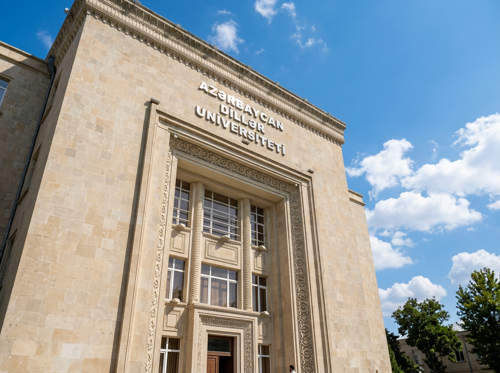
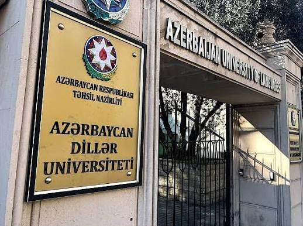
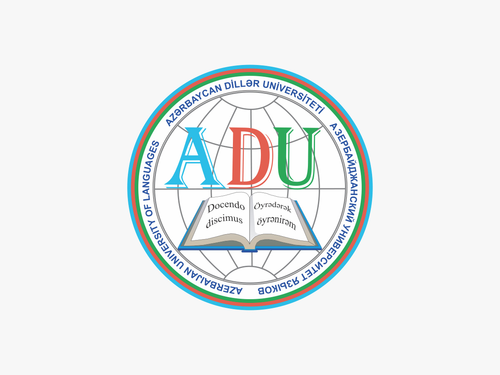

İkili diplom
İngilis və alman dilləri fakültəsi Böyük Britaniyanın Essex Universiteti ilə ikili diplom proqramında iştirak edir.
Xarici dillər, tərcümə və filologiya sahəsində ölkənin aparıcı ali təhsil müəssisələrindən biri. Tarixi 1937-ci ilə gedib çıxır.



Azərbaycan Dillər Universitetinin tarixi 1937-ci ildə Azərbaycan Pedaqoji İnstitutunun nəzdində xarici dillər fakültəsinin açılması ilə başlayır. 2000-ci ildə ali məktəbə universitet statusu verilib.
ADU 2005-ci ildən Bolonya prosesinin tələblərinə və ECTS-ə uyğun çevik kredit sistemini tətbiq edən ilk ali təhsil müəssisələrindən biridir. 2017-ci ildən isə Təhsil Nazirliyi tabeliyində publik hüquqi şəxs statusundadır.
Universitetdə bakalavr və magistr pilləsində təxminən 4 900 tələbə təhsil alır, tədris prosesində 700-dən çox müəllim iştirak edir. Müxtəlif fakültələr, o cümlədən İngilis və alman dilləri fakültəsi və Təhsil fakültəsi fəaliyyət göstərir. Ən son ixtisas siyahısı üçün rəsmi saytı yoxla.
Auditoriyalar, kitabxana və dəhlizlərin real şəkilləri. Digər məkanların fotoları əlavə olunacaq.


ADU-nun fakültələrinin təqdim etdiyi mübadilə və tərəfdaşlıq proqramlarından bəziləri.
İngilis və alman dilləri fakültəsi Böyük Britaniyanın Essex Universiteti ilə ikili diplom proqramında iştirak edir.
Orhun və Mevlana mübadilə proqramları tələbələrə xaricdə təhsil imkanı verir.
DAAD, Goethe və ÖSD ilə əməkdaşlıq alman dili təhsilini dəstəkləyir.
İngilis və alman dilləri üzrə tədris proqramları Avropa CEFR səviyyələrinə əsaslanır.
Mənbələr: adu.edu.az (fakültə təqdimatları), Wikipedia, OpenStreetMap. Qəbul şərtləri və proqramlar il ərzində dəyişə bilər, qərar verməzdən əvvəl rəsmi saytda yoxla.